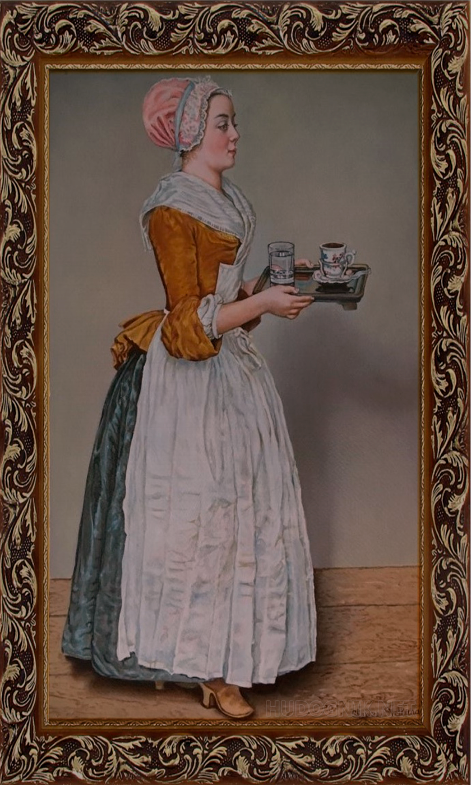
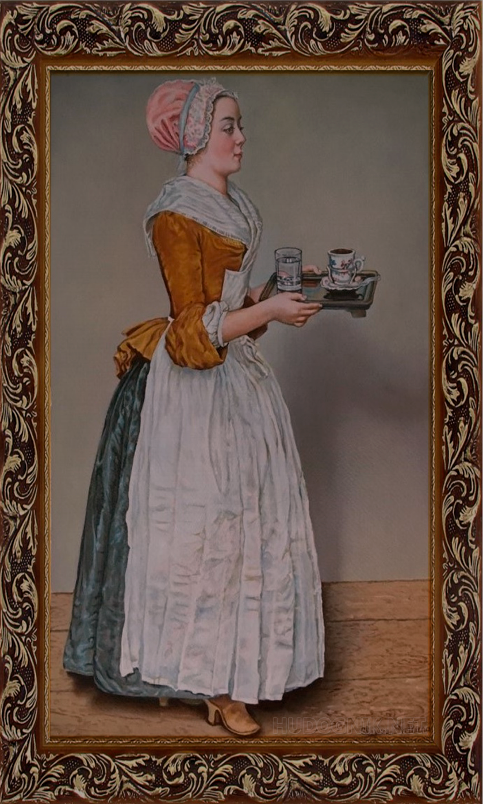

Факты
В культуре
В мире существует несколько шоколадных музеев — например, в Кёльне, Покрове и Брюгге. В городе Покров Владимирской области существует единственный в мире памятник шоколаду. Монумент словно создан из плитки шоколада и представляет собой образ сказочной феи с шоколадкой в руке. Памятник открыт 1 июля 2009 года и находится в нескольких шагах от покровского музея шоколада. Открытие памятника состоялось в рамках 15-летия деятельности в России компании «Крафт Фудс», ставшей инициатором создания данного памятника.
С шоколадом связано несколько рекордов.
Британский производитель шоколада «Thorntons» побил мировой рекорд Книги рекордов Гиннесса, приготовив самую большую плитку шоколада, весом почти 6 тонн (5 792,5 кг), четыре метра в ширину и четыре метра в длину. Ее продемонстрировали на 100-летие компании, и рекордная шоколадная плитка получилась эквивалентом 75 тысяч обычных шоколадок «Thorntons». До этого рекордсменом была армянская кондитерская фабрика «Grand Candy», которая, по случаю 10-летия деятельности, установила мировой рекорд, изготовив самую большую шоколадную плитку весом 4,41 тонны. Плитка изготовлялась в течение четырех дней, ее длина составляла 5,6 м, ширина — 2,75 м, а высота — 25 см. До них аналогичный рекорд принадлежал итальянским кондитерам, которые изготовили плитку весом 3,58 тонн.
Шоколатье — мастер шоколадного искусства — за работой
13 сентября в мире празднуется Всемирный день шоколада (International Chocolate Day), 11 июля — World Chocolate Day (в 1995 году придуманный французами и поддерживаемый различными мероприятиями в России); кроме того, день шоколада празднуют в США 7 июля и 28 октября, а также он может отмечаться 4 сентября. Шоколад также часто используется в качестве подарка на различные праздники, а шоколадные яйца популярны во время Пасхи.
Картина «Шоколадница» Жана-Этьена Лиотара является старейшей торговой маркой в США и одной из старейших в мире. Портрет шоколадницы экспонировался в Дрезденской галерее, где его увидел Генри Л. Пирс, президент американской фирмы по торговле шоколадом, и в 1862 году американская компания «Baker’s Chocolate» приобрела права на использование картины.
Шоколад фигурирует во многих произведениях. В 1964 году была опубликована книга «Чарли и шоколадная фабрика» о бедном мальчике Чарли Беккете, выигравшем экскурсию на шоколадную фабрику гениального производителя Вилли Вонки. Книга была дважды экранизирована, в 1971 и в 2005 годах, причем о втором фильме положительно отозвались критики, и он стал одним из самых кассовых фильмов года, собрав 470 миллионов долларов США в мировом прокате. Этот фильм был также отмечен за работу художника по костюмам.
В 1999 году вышел роман Дж. Харрис «Шоколад» — о молодой матери, меняющей жизнь целого городка. В 2000 году он был экранизирован и также имел успех в прокате (150 миллионов долларов США) и получил ряд наград.
«Шоколадным домиком» неофициально называется особняк С. С. Могилевцева в Киеве, в котором впоследствии проживали известные деятели науки, общественно-политической и государственной жизни.
Символ шоколада в Юникоде — 🍫.
Влияние на здоровье
В начале XIX века горячий шоколад продавался в аптеках как средство для сил и бодрости. Вопреки популярным представлениям о «шокоголиках», нет никаких свидетельств того, что шоколад способен вызывать болезненную аддикцию. Причины повышения настроения, вызываемого шоколадом, до сих пор окончательно не объяснены.
В состав шоколада входит большое количество жира и сахара (27 г и 54 г соответственно на 100 г темного шоколада), поэтому его чрезмерное потребление приводит к ожирению. Согласно исследованиям, проведенным немецким журналом «Ökotest», в некоторых видах горького шоколада также повышенное содержание кадмия, что может представлять опасность для здоровья.
Шоколад содержит вещества из группы флавоноидов, которые присутствуют также в красном вине и винограде. По некоторым предварительным данным, они полезны для сердца и сосудов; впрочем, есть данные, свидетельствующие об обратном. Из-за высокого содержания в какао-продуктах оксалатов их не советуют употреблять лицам, подверженным риску формирования камней в почках.
При экспериментах в клинике кильского университета имени Христиана Альбрехта в темном шоколаде был обнаружен представляющий опасность для человека охратоксин А.
Вспышки сальмонеллеза, связанные с употреблением шоколада, известны с 1970-х годов. В качестве источника заражения шоколада сальмонеллой могут выступать какао-бобы, при этом контаминация может происходить на этапах транспортировки, распределения и в производственной среде. Кроме того, ингредиенты, такие как лецитин или молочный порошок, также могут вносить вклад в загрязнение продукта сальмонеллой. Особую сложность представляет тот факт, что даже очень низкие уровни контаминации (≤10 клеток на 100 г) способны вызывать заболевание, что затрудняет их обнаружение путем стандартного мониторинга и проверки.
Срок хранения
Стандартный срок хранения шоколада: 12 месяцев при подходящей температуре. Сроки хранения зависят от:
•типа изделия (процентного содержания какао);
•наличия начинки;
•жирности.
В общем случае срок и условия хранения (диапазон температур, влажность воздуха) должны быть указаны на упаковке.
Признак устаревания: белый налет на поверхности и особенно на гранях.
 
